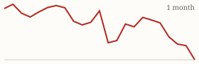
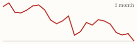

| Today's briefing for operators |
Top line: Homeowner equity tops the whole economy while sales stall |
|
| Friday, November 20, 2026 | Late Edition | Curated from 63 voices on X |
|
Real Estate
Homeowner Equity Now Exceeds the Entire U.S. Economy
U.S. homeowners hold $35 trillion in equity against a $33 trillion GDP, or 106%, near an all-time high and on par with the mid-2000s bubble, Nick Gerli reports.
By @nickgerli1 |
Chart of U.S. homeowner equity as a share of GDP. Image via @nickgerli1 on X | Gerli says that equity reflects prices that have grown faster than the economy and inflation, while home sales have dropped to the lowest level ever. The result is a standstill: owners cling to equity on paper, and buyers can't afford to pay it. |
His view is that the market heals when equity, meaning prices, falls back to a more normal 70-80% of GDP, and that sales rebound after that. For anyone buying now, that means sellers' price expectations are the main obstacle, and pricing discipline matters more than volume. |
|
| Read on X |
|
Mortgage Rates & Markets | Mortgage Rates Today's average lender rates | 30-year fixed | 7.45% | -0.01 | | 15-year fixed | 6.99% | +0.01 |
Daily change vs. prior day. Source: Mortgage News Daily, as of 11/19/2026 (updated weekdays about 4 PM ET). |
|
S&P 500 Close of Thu, Nov 19 S&P 500 7,175.83 ▼ -147.80 (-2.02%)  Yahoo Finance chart data (daily closes) |
|
Nasdaq Composite Close of Thu, Nov 19 Nasdaq Composite 23,879.20 ▼ -550.68 (-2.25%)  Yahoo Finance chart data (daily closes) |
|
| Real Estate & Deals | 1,071 Units Closed, All Off-Market By @loganjrankin Logan Rankin closed 1,071 apartment units this year, all off-market, all in markets he already owns in, with no outside equity or partners. His point: years spent building the balance sheet, liquidity and operations are what let you move when the deals show up. Read on X |
Reset Your Buyers' Expectations By @Jacob_Naviaux A first-time flipper wanted a $50K net on a cosmetic deal with hard money and a GC. Naviaux told him $15K was more realistic against all-cash, licensed competitors who do their own labor. He says good wholesalers have to be able to have that conversation with buyers. Read on X |
Underwrite for What Goes Wrong By @loganjrankin Rankin never buys on the best case. He tests each deal against higher rates, lower rents, surprise expenses and a recession. If it only works when everything goes perfectly, it doesn't work. Read on X |
Boring Work Compounds By @coleruudjohnson Cole Ruud Johnson warns that when markets get hard, most personal brands pivot to the next shiny thing and then come back starting over. Ten years of the same boring work gave him stable cash flow, real businesses and real assets. Read on X |
| AI Briefing | Anthropic Goes Public By @AnthropicAI Anthropic began trading on Nasdaq Thursday. Peter Diamandis put the debut at roughly $2 trillion and noted the company says demand still exceeds its computing capacity. In his IPO remarks, CEO Dario Amodei framed the mission around speeding up science and medicine. Read on X |
GPT-Live-1.1 announcement video. Image via @OpenAIDevs on X GPT-Live-1.1 Adds a Cheap Standby Mode By @OpenAIDevs OpenAI's new voice model in the API has more natural accents, handles tasks more reliably and adds a standby option that lowers idle costs. Nick Saraev puts an always-on voice assistant at about $1.20 an hour. Read on X |
Perplexity Brain announcement graphic. Image via @perplexity_ai on X Perplexity's Agent Now Writes Its Own Skills By @perplexity_ai Brain, part of Perplexity Computer, learns how you work from past sessions and then writes and updates reusable skills for future tasks. Read on X |
Gemini on Mac Can Now Use Your Computer By @GeminiApp The Gemini Mac app can now take over tasks across your folders, apps and the web in a background window, so your own screen and cursor stay free. Read on X |
Gemini 4 Neon Tops LiveBench By @bindureddy Bindu Reddy reports that Google's Gemini 4 Neon is now #1 on LiveBench, ahead of Fable and Astra. Alex Finn also calls the new Gemini models the best available right now. Read on X |
5 ChatGPT Prompts for Getting Paid More By @Sabrina_Ramonov Sabrina Ramonov's list starts with a "brag document": paste in the work you've done and ChatGPT turns it into a clear list of wins. It works just as well for staff reviews as for your own pitch to partners. Read on X |
| Business & Leadership | Where Do Crazy Ideas Get Heard? By @PeterDiamandis Diamandis: the day before something is a breakthrough, it's a crazy idea. If your company has no place where crazy ideas get a hearing, don't expect breakthroughs. Read on X |
"If Anything Can Go Wrong, Fix It" By @PeterDiamandis Diamandis got tired of seeing Murphy's Law on the office wall and wrote his own rule in response. It's still one of his operating rules: own the problem instead of expecting it. Read on X |
Work Backward From the Moonshot By @PeterDiamandis A big goal feels overwhelming because it's so far from where you are today. Start from the outcome and work backward to the next step. Read on X |
|
The Hyre Times is compiled each morning by Groky from public posts on X plus public rate and market data. Summaries reflect the authors' own claims and have not been independently verified. Not financial advice. © 2026 Hyre Times. |
|